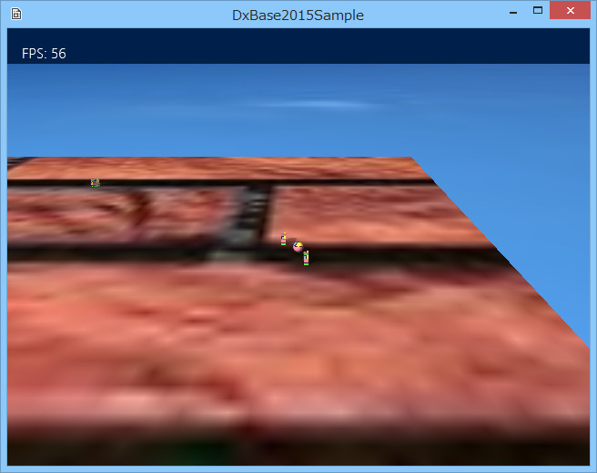

図1009a
この画面では、いつものオブジェクトが、壁模様の各頂点を、たすき掛けするように巡回します。
void SeekObject::Create(){
//中略
//操舵系のコンポーネントをつける場合はRigidbodyをつける
auto PtrRegid = AddComponent<Rigidbody>();
//FollowPath操舵
auto PtrFollowPath = AddComponent<FollowPathSteering>();
//経路を設定する
list<Vector3> List;
List.push_back(Vector3(20.0f, 0.125f, 20.0f));
List.push_back(Vector3(-20.0f, 0.125f, -20.0f));
List.push_back(Vector3(-20.0f, 0.125f, 20.0f));
List.push_back(Vector3(20.0f, 0.125f, -20.0f));
PtrFollowPath->SetPathList(List);
//ループする
PtrFollowPath->SetLooped(true);
//Arrive操舵
auto PtrArrive = AddComponent<ArriveSteering>();
//Arriveは無効にしておく
PtrArrive->SetUpdateActive(false);
//オブジェクトのグループを得る
auto Group = GetStage()->GetSharedObjectGroup(L"ObjectGroup");
//グループに自分自身を追加
Group->IntoGroup(GetThis<SeekObject>());
//分離行動をつける
AddComponent<SeparationSteering>(Group);
//中略
}
void SeekObject::FollowPathStartMoton(){
auto PtrFollowPath = GetComponent<FollowPathSteering>();
PtrFollowPath->SetUpdateActive(true);
}
bool SeekObject::FollowPathUpdateMoton(){
if (GetPlayerLength() <= m_StateChangeSize){
//プレイヤーとの距離が一定以以下ならtrue
return true;
}
return false;
}
void SeekObject::FollowPathEndMoton(){
auto PtrFollowPath = GetComponent<FollowPathSteering>();
PtrFollowPath->SetUpdateActive(false);
}
void FarState::Enter(const shared_ptr<SeekObject>& Obj){
Obj->FollowPathStartMoton();
}
void FarState::Execute(const shared_ptr<SeekObject>& Obj){
if (Obj->FollowPathUpdateMoton()){
Obj->GetStateMachine()->ChangeState(NearState::Instance());
}
}
void FarState::Exit(const shared_ptr<SeekObject>& Obj){
Obj->FollowPathEndMoton();
}